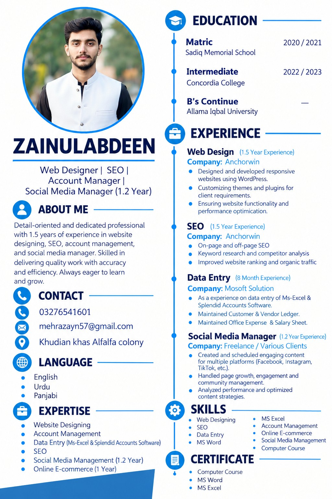

I'm Zainulabdeen — Web Designer, SEO Specialist, Account Manager and Social Media Manager. I create professional websites, improve online visibility and manage digital work with accuracy.

My work combines web design, SEO, social media and data management — giving businesses practical digital support from website to content.
Responsive WordPress websites, theme customization, plugins and performance improvements.
Keyword research, competitor analysis, on-page and off-page optimization.
Content planning, scheduling, community management and engagement optimization.
Core skills from my professional profile.
Project areas from my professional profile. Real screenshots and links can be added when available.
Professional responsive layouts, theme/plugin customization and website functionality improvements.
Keyword research, competitor analysis, on-page and off-page optimization.
Content creation and scheduling, community management, engagement tracking and strategy improvement.
MS Excel and accounting software data entry, customer/vendor ledgers, office expenses and salary sheets.
Designed responsive WordPress websites, customized themes/plugins and worked on functionality and performance.
Worked on keyword research, competitor analysis, on-page/off-page SEO and website optimization.
Worked with MS Excel and accounting software; maintained customer/vendor ledgers, expense and salary sheets.
Created and scheduled content, managed communities, monitored engagement and optimized content strategies.
Open to suitable job and freelance opportunities.